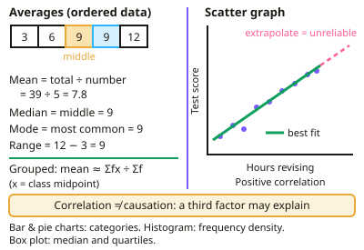

GCSE Maths · Topic 6
Statistics
Statistics is about collecting, presenting and interpreting data to answer real questions.
We will calculate averages and spread, sample fairly, and use scatter graphs and lines of best fit.
Then we draw cumulative frequency graphs, box plots and histograms, analyse time series, and compare data sets, spotting misleading statistics.
- 7 subtopics
- 475 questions
- Free: 6.1 notes and 10 questions
In this topic
- 6.1Averages and data representationFree below · 70 questions
- 6.2Data collection, sampling and capture-recaptureOpen in Full Marks · 72 questions
- 6.3Scatter graphs, correlation and lines of best fitOpen in Full Marks · 70 questions
- 6.4Cumulative frequency, quartiles and box plotsOpen in Full Marks · 66 questions
- 6.5Histograms and frequency densityOpen in Full Marks · 59 questions
- 6.6Time series and moving averagesOpen in Full Marks · 68 questions
- 6.7Comparing distributions and misleading statisticsOpen in Full Marks · 70 questions
6.1 · Free notes
Averages and data representation

Key points
- Mean = total ÷ number of values; median is the middle value when ordered; mode is the most common value; range = largest − smallest.
- For grouped data, estimate the mean using midpoints: Σ(fx) ÷ Σf.
- Scatter graphs show correlation (positive, negative or none); a line of best fit can be used to estimate values, though extrapolating beyond the data is unreliable.
- Correlation does not imply causation — a third factor may explain the link.
- Other diagrams: bar charts and pie charts for categorical data, histograms with frequency density for grouped continuous data, and box plots showing the median and quartiles.
In more detail
- Worked averages: 3, 7, 7, 9, 14 → mean = 40 ÷ 5 = 8; median = 7; mode = 7; range = 14 − 3 = 11.
- Worked grouped mean: classes 0–10 (f = 4), 10–20 (f = 6), 20–30 (f = 10) → midpoints 5, 15, 25 → Σfx = 20 + 90 + 250 = 360 → mean ≈ 360 ÷ 20 = 18.
- Worked missing value: five numbers have mean 12, so total 60; four are 10, 11, 14 and 9 (total 44) → the fifth is 16.
- Worked pie chart: 25 of 90 people chose tea → angle = 25/90 × 360° = 100°.
- Worked combined mean: 20 students with mean 64 and 30 with mean 70 → (1280 + 2100) ÷ 50 = 67.6.
Practice
Averages and data representation: 10 questions
Pick an answer to check it, or open the answer for the explanation.
1. What is the median of 3, 7, 9, 12, 15?
- 7
- 9
- 12
- 9.2
Show answer
B: 9. The middle value when ordered is 9.
2. How is the range calculated?
- Largest + smallest
- Largest − smallest
- Total ÷ number of values
- The most common value
Show answer
B: Largest − smallest. Range measures spread.
3. What does a negative correlation show on a scatter graph?
- As one variable increases, the other increases
- As one variable increases, the other decreases
- No relationship
- A curved relationship
Show answer
B: As one variable increases, the other decreases. The line of best fit slopes downwards.
4. Why is extrapolation unreliable?
- It uses the mean
- It predicts beyond the range of the data, where the trend may not continue
- It is always inaccurate within the data
- It requires more values
Show answer
B: It predicts beyond the range of the data, where the trend may not continue. The pattern may change outside the data collected.
5. What is plotted on the vertical axis of a histogram for grouped continuous data?
- Frequency
- Frequency density
- Cumulative frequency
- Midpoint
Show answer
B: Frequency density. Frequency density = frequency ÷ class width.
6. What is the mean of 4, 8, 9, 11?
- 8
- 8.5
- 9
- 32
Show answer
A: 8. 32 ÷ 4 = 8.
7. Which average is least affected by an extreme value?
- Mean
- Median
- Range
- Total
Show answer
B: Median. The median depends on position, not size, of values.
8. In a pie chart, 90 people out of 360 chose an option. What angle represents them?
- 45°
- 90°
- 120°
- 180°
Show answer
B: 90°. (90 ÷ 360) × 360 = 90°.
9. What is the median of 4, 9, 2, 7, 10, 5?
- 4.5
- 7
- 6
- 5
Show answer
C: 6. Order first: 2, 4, 5, 7, 9, 10. The middle two values are 5 and 7, so the median is 6. Taking the middle of the unordered list gives 4.5, which is wrong.
10. The mean of 5 numbers is 8. A sixth number, 14, is added. What is the new mean?
- 10
- 9
- 8
- 11
Show answer
B: 9. The original total is 5 × 8 = 40. The new total is 54, and 54 ÷ 6 = 9. Averaging 8 and 14 to get 11 ignores the different numbers of values.
Keep going in Full Marks
Full Marks has 70 questions on Averages and data representation (60 more than here), set out in practice levels. You also get notes and 3D models for all 7 subtopics of Statistics, plus games, timed exams and past papers.
On your exam board
- AQATopic 6: Statistics
- OCR ATopic 6: Statistics
- EdexcelTopic 6: Statistics
- CambridgeTopic 9: Statistics